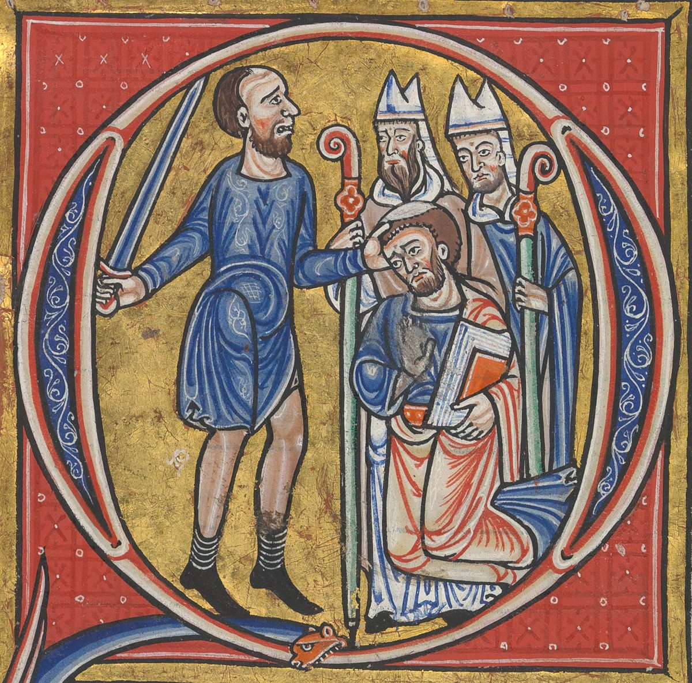

1 Samuel 22 — The Mister Translation
![Medieval manuscript page with four painted scenes under arcades on gold, blue and rose grounds, with Latin captions above and below and Persian and Judeo-Persian writing in the margins. Top left: a rider in a broad hat, holding a spear, speaks from his horse to a man in mail. Top right: a group of bareheaded men in short tunics stand and gesture among trees. Bottom left: a crowned king on a throne, holding a spear, points at a young man in blue who holds a spear. Bottom right: soldiers in mail with swords and axes cut down a crowd of robed, bearded men, some already lying on the ground bleeding.](img/art/morgan-bible-massacre-priests-nob.jpg)
1 Samuel 22:11, 16–19. The Latin caption above the page says how Saul sent for Ahimelech and all his father’s house, who were all priests; the one below, how, when Ahimelech and the other priests came to the king, eighty-five of them, LXXXV, he had them all killed and laid waste their city so that scarcely one escaped. The king points at a young man with a spear, perhaps Doeg, but the painter gives the killing to a squad of soldiers; in the Hebrew the king’s own men “were not willing”, and Doeg does it alone (22:17–18).


Psalm 52, whose heading reads “when Doeg the Edomite came and told Saul, and said to him, David has come to the house of Ahimelech”, is Psalm 51 in the Latin numbering, and opens Quid gloriaris in malitia, “Why do you boast in evil?”: the Q of Quid holds the scene of 1 Samuel 22:18. The painter dresses the priests of Nob as twelfth-century bishops with mitres and crosiers, and Ahimelech kneels with a book.
_-_KB_76_F_13,_folium_074v_(cropped).jpg){kind=link}
Translator's Notes — verse by verse
Escaped, again. “And David went from there, and escaped to the cave of Adullam”: va-yimmalet el-me’arat Adullam. “Escaped” is the verb of the night he went out of the window and of the run to Ramah (19:10, 12, 17, 18, already on these pages); the book uses it of David four times in one chapter there, and here once more, coming out of Gath. Adullam is a town of the lowland of Judah, the place where Judah “turned aside to a man of Adullam whose name was Hirah” (Genesis 38:1, already on these pages) (Adullam). Micah later names it in a lament over the towns of the lowland, “to Adullam the glory of Israel will come” (Micah 1:15, already on these pages), and the cave comes back when three of David’s mighty men go down to him “to the cave of Adullam” at harvest (2 Samuel 23:13). Two psalms are headed “in the cave” (Psalms 57 and 142); the headings do not say which cave, and chapter 24 has another. Josephus places it “in a cave by the city of Adullam” (Antiquities 6.12.3). The ASV has “and escaped to the cave of Adullam”; the Geneva “and saved himself in the cave of Adullam”; the NIV and the TLB open with “David left Gath”, which the Hebrew leaves as “from there”.
His father’s house comes down. “And his brothers and all his father’s house heard, and they went down to him there.” Bethlehem sits on the ridge, and Adullam in the low hills to the west, so they “went down”. The last time a brother of David spoke to him, it was Eliab’s “I know your presumption and the evil of your heart” in the valley of Elah (17:28, already on these pages); now the whole house is with him, and the next two verses show why it had to be.
Three kinds of men. “Every man in distress, and every man who had a creditor, and every man bitter of soul”: kol-ish matsoq, ve-khol-ish asher-lo nosheh, ve-khol-ish mar-nefesh. The nosheh is a lender who exacts what is owed, the word of the law “you shall not act toward him as a creditor” (Exodus 22:25, already on these pages, in the English numbering that page keeps). “Bitter of soul” is what Hannah was at Shiloh, “bitter in soul”, marat nafesh (1:10, already on these pages), and it is the phrase David’s enemies will use of him and his men later: “they are mighty men, and bitter of soul, like a bear robbed of her cubs in the field” (2 Samuel 17:8). The ASV has “every one that was in distress, and every one that was in debt, and every one that was discontented”; the NWT 1984 “all men in distress and all men who had a creditor and all men bitter in soul”; the Douay “under affliction of mind”; the Geneva “vexed in mind”; the TLB “or merely discontented”. The Greek has “pained in soul”.
A ruler of four hundred. “And he became ruler over them”: va-yehi aleihem le-sar, the word sar that the book has used for the king’s “commander of a thousand” (18:13, already on these pages) (sar). The men Saul made commanders are Saul’s; these four hundred have no one else. The number will grow to six hundred (23:13, now on these pages). A judge had gathered men the same way: “empty men gathered to Jephthah and went out with him” (Judges 11:3, already on these pages).
Mizpeh of Moab. “And David went from there to Mizpeh of Moab”: Mitspeh Mo’av, “the watchtower of Moab”. The name stands in one verse of the Hebrew Bible, this one, and the place has not been identified (Mizpeh of Moab). The Greek writes it Massēphath. “Let my father and my mother, please, come out [to be] with you”: yetse-na avi ve-immi ittekhem. The “you” is plural, the king and his people, as the NWT 1984 marks it: “dwell with YOU people”. Jesse is old (17:12, already on these pages), and a family that Saul’s men could find in Bethlehem is not safe there.
Why Moab. The chapter gives no reason. The book of Ruth gives a family one: Ruth was a woman of Moab, and her son Obed “is the father of Jesse, the father of David” (Ruth 4:17, already on these pages) (Moab). Moab is also one of the enemies Saul fought (14:47, already on these pages), and an enemy of Saul is a safe host for the man Saul is hunting. “Until I know what God will do for me”: David says “God”, Elohim, to a foreign king, and waits on what he does not yet know. The ASV has “till I know what God will do for me”; the NWT 1984 “until I know what God will do to me”.
He led them. “And he led them before the king of Moab”: va-yanchem et-penei melekh Mo’av, from the verb of “he guides me in tracks of righteousness” (Psalm 23:3, already on these pages). The Greek has “he entreated the face of the king of Moab”, taking the letters as a different verb. The ASV has “And he brought them before the king of Moab”; the NWT 2013 “So he left them with the king of Moʹab”; the Douay “And he left them under the eyes of the king of Moab”.
Which stronghold. “All the days that David was in the stronghold”: ba-metsudah, a place hard to reach (metsudah). The chapter does not say where it is. The TLB makes it the cave: “during the entire period when David was living in the cave”. The prophet’s next words, “Go, and come into the land of Judah”, suggest that it was outside Judah, in Moab; and later the cave of Adullam and “the stronghold” come one verse apart (2 Samuel 23:13–14). Both readings are argued (reported, not decided). The KJV has “in the hold”; the NWT 1984 “in the inaccessible place”; the ASV and the NWT 2013 “in the stronghold”.
Gad the prophet. “And Gad the prophet said to David: ‘Do not stay in the stronghold.’” This is the first time Gad appears, without a father’s name or a town (Gad the prophet). “Gad the prophet” stands in two verses of the Hebrew Bible: here, at the start of David’s flight, and near the end of 2 Samuel, where Jehovah’s word comes “to Gad the prophet, David’s seer” after the census (2 Samuel 24:11); Chronicles cites “the words of Gad the seer” as a record of David’s reign (1 Chronicles 29:29). Samuel anointed David and is still at Ramah (19:18, already on these pages); from now on the word that guides David comes through Gad and, from the next chapter, through the ephod that Abiathar brings (23:6, now on these pages). The verb of this little section is “stay”, yashav: his parents “stayed” with the king of Moab, David must not “stay” in the stronghold, in verse 6 Saul is “sitting” under his tree, and in verse 23 David tells Abiathar, “Stay with me.”
The forest of Hereth. “And David went, and came to the forest of Hereth”: ya’ar Charet. The name stands in one verse of the Hebrew Bible, this one, and the place is not known (Hereth). The Greek has “in the city of Sarik”, reading ya’ar, forest, as ir, city: the same three letters with the first two swapped. The KJV spells it “Hareth”; the Douay “Haret”.
The king under a tree. “And Saul was sitting in Gibeah, under the tamarisk on the height, with his spear in his hand”: yoshev ba-Giv’ah tachat ha-eshel ba-ramah, va-chanito ve-yado. Saul sat “under the pomegranate tree” at the edge of Gibeah in 14:2, and he sat “in his house with his spear in his hand” when he threw it at David (19:9; both already on these pages); the spear is with him in 18:10, 19:9, 20:33 and here. The tamarisk is eshel (eshel). The word stands in three verses of the Hebrew Bible: Abraham “planted a tamarisk at Beersheba” (Genesis 21:33, already on these pages); Saul holds court under this one; and the men of Jabesh will bury Saul’s bones “under the tamarisk in Jabesh” (31:13, now on these pages). “On the height”: ba-ramah. Ramah is also Samuel’s town, a few miles from Gibeah, and the word is the ordinary Hebrew for a height. The ASV has “under the tamarisk-tree in Ramah”; the KJV “under a tree in Ramah”; the NWT 1984 “under the tamarisk tree on the high place”; the NIV “under the tamarisk tree on the hill at Gibeah”; the TLB “sitting beneath an oak tree playing with his spear”. The Greek has “under the field that is in Rama”.
Sons of Benjamin. “Hear, please, sons of Benjamin!”: shim’u-na, benei yemini. Saul is “a Benjamite”, ben-yemini, from the smallest of the tribes (9:21, already on these pages); David is of Judah. The plural benei yemini stands in two verses of the Hebrew Bible: here, and in the night at Gibeah in Judges, where “the men of the place were Benjamites” (Judges 19:16, already on these pages) (Benjamin). The king has stopped speaking to Israel and speaks to his own tribe.
Fields and vineyards. “Will the son of Jesse give to all of you also fields and vineyards? Will he make all of you rulers of thousands and rulers of hundreds?” Samuel had told the people what a king would do: “your fields and your vineyards and your olive groves, the best of them, he will take, and give them to his servants”, and he would “appoint for himself rulers of thousands and rulers of fifties” (8:12–14, already on these pages). Saul’s question takes it for granted that he has done exactly that, and asks whether David will do it better. He does not use David’s name; he says “the son of Jesse”, as at the feast (20:27, 30–31, already on these pages). The TLB has “Has David promised you fields and vineyards and commissions in his army?”; the Douay “and make you all tribunes, and centurions”.
No one uncovers my ear. “That you have all of you conspired against me, and there is no one who uncovers my ear when my son cuts [a covenant] with the son of Jesse”: ki qeshartem kullekhem alai, ve-ein goleh et-ozni. To uncover the ear is to tell someone a secret: Jehovah “had uncovered Samuel’s ear” before Saul came (9:15), and Jonathan told David “my father does nothing, great or small, without uncovering my ear” (20:2, both already on these pages), and promised to uncover David’s ear in 20:12–13. Saul says it twice in this verse and again in verse 17. “Cuts” is bikhrot, with no word for covenant, as when “Jonathan cut [a covenant] with the house of David” (20:16, already on these pages). The NWT 1984 has “when my own son concludes [a covenant] with the son of Jesʹse”; the KJV “that my son hath made a league with the son of Jesse”.
None of you is sorry for me. “And there is none of you who is sorry for me”: ve-ein choleh mikkem alai, literally “sick over me”. The three participles ring against each other: goleh, uncovering, choleh, sick, goleh again. “That my son has raised up my servant against me, to lie in ambush, as at this day”: le-orev (arav). The only ambush in these chapters is the one Saul set, with the messengers sent to David’s house “to watch him and to put him to death in the morning” (19:11, already on these pages). The Greek has “as an enemy”, reading le-oyev for le-orev, here and in verse 13. The ASV has “there is none of you that is sorry for me”; the NWT 1984 “there is no one of YOU having sympathy for me”; the TLB “My own son—encouraging David to come and kill me!”
Doeg answers. “And Doeg the Edomite answered — and he was stationed over the servants of Saul”: ve-hu nitsav al-avdei Sha’ul (Doeg). He was the man “detained before Jehovah” at Nob the day David came (21:8, already on these pages). The same participle stood twice in verses 6 and 7, “stationed about him”, of the servants around the king, and it will stand of the runners in verse 17; whether Doeg stands over the servants as their chief or simply among them, the phrase can carry both. The ASV has “who stood by the servants of Saul”; the KJV “which was set over the servants of Saul”; the NWT 2013 “who was stationed there over the servants of Saul”; the NIV “who was standing with Saul’s officials”; the Douay “who stood by, and was the chief among the servants of Saul”. The Greek again calls him “Doeg the Syrian”, as in 21:8, and sets him “over Saul’s mules”; Josephus follows it, “Doeg the Syrian, who fed his mules” (Antiquities 6.12.4).
Five verses, three spellings. Doeg’s name stands in five verses of the Hebrew Bible: 21:8, three verses in this chapter (9, 18, 22), and the heading of Psalm 52, “when Doeg the Edomite came and told Saul”. The name is written D’G in 21:8 and verse 9, and DW’G in the psalm; in verses 18 and 22 the written text has DWYG, Doyeg, and the reading tradition says Doeg (ketiv and qere). The Hebrew on this page prints both, the written form first.
What Doeg says. “I saw the son of Jesse coming to Nob, to Ahimelech son of Ahitub. And he inquired of Jehovah for him; and provisions he gave him, and the sword of Goliath the Philistine he gave him.” Doeg uses the king’s name for David, “the son of Jesse”. “Provisions” is tsedah, food for a journey, what Joseph gave his brothers “for the road” (Genesis 42:25, already on these pages); chapter 21 calls it holy bread. Twice the Hebrew puts the gift before the verb: “provisions he gave him, and the sword … he gave him”. The NWT 1984 keeps the order: “and provisions he gave him, and the sword of Go·liʹath the Phi·lisʹtine he gave him”.
An inquiry chapter 21 does not tell. “He inquired of Jehovah for him.” Chapter 21 says nothing of an inquiry: David asks for bread and a weapon, and the priest gives them (21:2–10, already on these pages). Either Doeg adds it, to make the priest a party to David’s plans, or the narrator left it out of chapter 21 and lets it surface here; Ahimelech does not deny it in verse 15 (reported, not decided). What Doeg leaves out is the one thing that would clear the priest: David told him that he came on the king’s own business (21:3). The TLB puts verses 9 and 10 together and adds a purpose for the inquiry: “to find out what David should do”.
All of them came. “And the king sent to call Ahimelech son of Ahitub, the priest, and all his father’s house, the priests who were in Nob; and they came, all of them, to the king.” They come because they have nothing to hide. Ahimelech is “son of Ahitub”, and Ahitub was the son of Phinehas son of Eli (14:3, already on these pages): the priests of Nob are the house of Eli (Ahimelech; Eli).
Son of Ahitub. “Hear, please, son of Ahitub.” “Here I am, my lord”: hinneni, adoni, the answer the boy Samuel gave in the night (3:4, already on these pages) (hineni). Saul uses no name for the priest until he sentences him in verse 16, as he uses none for David. The TLB has the king shout, and the priest answer “What is it?”
The king’s own name. “In your giving him bread and a sword, and inquiring of God for him”: ve-sha’ol lo be-Elohim. The verb to inquire, sha’al, is the root of the king’s name, Sha’ul, “asked” (sha’al), and this chapter spells it his way twice. In verse 13 the infinitive is written ve-sha’ol, the same four letters as “and Saul”. In verse 15 the written text has lsh’wl, the letters of “to Saul”, where the reading tradition says lish’ol, “to inquire”; the Hebrew on this page prints both. Doeg said the priest asked “of Jehovah” (verse 10); Saul says “of God”.
Faithful. “And who among all your servants is like David, faithful”: ke-David ne’eman. Samuel was “faithful as a prophet of Jehovah” (3:20), and the man of God said of Eli’s house, “I will raise up for myself a faithful priest … and I will build him a faithful house” (2:35, both already on these pages) (aman). A priest of that house uses the word of the man Saul wants dead. “And the king’s son-in-law” (18:27, already on these pages), “and honoured in your house”, nikhbad, the word the servant used of Samuel, “the man is held in honour” (9:6, already on these pages). The ASV has “who among all thy servants is so faithful as David”; the NWT 2013 “Who among all your servants is as trustworthy as David?”; the NIV “Who of all your servants is as loyal as David”.
At your bidding, or over your guard. “And one who turns aside at your bidding”: ve-sar el-mishma’tekha. As the Hebrew is written, sar begins with samekh and is the verb sur, to turn aside: David turns aside to whatever the king wants heard. The Greek read it as sar with sin, a chief, “ruler over all your command” (sar). Mishma’at, from shama, to hear, is what is heard and obeyed (mishma’at). It stands in four verses of the Hebrew Bible: here; twice of Benaiah, whom David set “over his bodyguard” (2 Samuel 23:23; 1 Chronicles 11:25); and once of the nations that will obey Israel (Isaiah 11:14); none of the three is translated here yet. The KJV has “and goeth at thy bidding”; the ASV “and is taken into thy council”; the Geneva “and goeth at thy commandment”; the NWT 1984 “and a chief over your bodyguard”; the NIV “captain of your bodyguard”.
Is it today that I have begun? “Is it today that I have begun to inquire of God for him? Far be it from me!” The question can be read two ways. It can mean that the priest has inquired for David many times, as the king’s commander, and this was nothing new; the NIV has “Was that day the first time I inquired of God for him? Of course not!”, and the TLB “This was certainly not the first time I had consulted God for him!” Or it can mean that he has not begun a conspiracy today, and the “Far be it” answers the charge; the ASV has “Have I to-day begun to inquire of God for him? be it far from me” (reported, not decided). “Far be it from me”, chalilah li, is what Jehovah said in the sentence on Eli’s house: “but now, declares Jehovah, far be it from me!” (2:30, already on these pages) (chalilah).
Small or great. “For your servant knew nothing in all this, small or great”: davar qaton o gadol, Jonathan’s pair from 20:2 (already on these pages), “great or small”, reversed. It is true. David lied to him (21:3), and the priest gave bread and a sword to the king’s son-in-law on what he believed was the king’s errand. The ASV has “for thy servant knoweth nothing of all this, less or more”; the Douay “for thy servant knew nothing of this matter, either little or great”.
The sentence Saul passed once before. “You shall surely die, Ahimelech, you and all your father’s house”: mot tamut, Achimelekh. Saul said the same words to his own son, “you shall surely die, Jonathan”, and the people would not let it happen: “So the people ransomed Jonathan, and he did not die” (14:44–45, already on these pages). This time the priest is not ransomed. “And all your father’s house” is the house the man of God spoke of in 2:31–33 (already on these pages); see verse 20.
The runners. “And the king said to the runners who were stationed about him”: la-ratsim, the men who run before a king (ratsim). Samuel had warned of them too: “your sons he will take … and they will run before his chariots” (8:11, already on these pages). Adonijah will have “fifty men running before him” when he makes himself king (1 Kings 1:5, already on these pages). The ASV has “unto the guard that stood about him”; the KJV “unto the footmen”; the NWT 1984 “to the runners”; the Douay “to the messengers”; the Geneva “unto the sergeants”.
Turn. “Turn, and put to death the priests of Jehovah”: sobbu, from savav, to turn round, to go about (sabab). The verb comes four times in this chapter: the runners are told to “turn” (verse 17), Doeg is told to “turn” and “turned” (verse 18), and David says, “It is I who have turned [it] upon every soul of your father’s house” (verse 22).
His ear, my ear. “Because their hand also is with David, and because they knew that he was fleeing and did not uncover my ear.” It is the third time in the chapter that Saul complains of an ear left closed. The written text has azno, “his ear”; the reading tradition and the Greek have ozni, “my ear” (ketiv and qere). The ASV has “and did not disclose it to me”; the NWT 1984 “and they did not disclose it to my ear!”
Not willing. “But the servants of the king were not willing to stretch out their hand to fall upon the priests of Jehovah”: ve-lo avu. In chapter 15 Saul and the people “were not willing” to destroy what Jehovah had condemned (15:9, already on these pages); here his servants are not willing to destroy what Jehovah has not. To “stretch out the hand” against Jehovah’s own is what David will refuse to do to Saul (24:6, 10, now on these pages; 26:9, 11, 23, now on these pages), and what he will ask the Amalekite about: “How were you not afraid to stretch out your hand to destroy Jehovah’s anointed?” (2 Samuel 1:14, already on these pages). “To fall upon” is paga, to meet, to strike down (paga), the verb of David’s order in the next verse of that chapter, “Come near, strike him down” (2 Samuel 1:15). The ASV has “But the servants of the king would not put forth their hand to fall upon the priests of Jehovah”; the TLB “But the soldiers refused to harm the clergy.”
You turn. “And the king said to Doeg: ‘You turn, and fall upon the priests.’ And Doeg the Edomite turned, and he fell upon the priests”: va-yifga hu ba-kohanim, “and he, he fell upon”, the pronoun marking that he did it himself. The man who will do it is the foreigner, “Doeg the Edomite”. The NWT 1984 has “and himself assaulted the priests”; the ASV “and he fell upon the priests”.
Carrying a linen ephod. “And he put to death on that day eighty-five men carrying a linen ephod”: nose efod bad (ephod). “Carrying an ephod” stands in two verses of the Hebrew Bible: here, and of Ahijah son of Ahitub in Saul’s camp, “carrying an ephod” (14:3, already on these pages); and it is the task Jehovah gave the house of Eli, “to carry an ephod before me” (2:28, already on these pages). “A linen ephod” stands in four verses of the Hebrew Bible: the boy Samuel “girded with a linen ephod” (2:18, already on these pages), the priests here, and David dancing before the ark (2 Samuel 6:14; 1 Chronicles 15:27). The ASV has “persons that did wear a linen ephod”; the NWT 2013 “85 men wearing the linen ephod”; the TLB “all wearing their priestly robes”.
Eighty-five, or more. The Hebrew has eighty-five, and all thirteen versions on the shelf follow it. The Greek has “three hundred and five men, all carrying an ephod”, without “linen”; Josephus has “three hundred and eighty-five” (Antiquities 6.12.6).
From man to woman. “And Nob, the city of the priests, he struck with the edge of the sword, from man to woman, from child to suckling, and ox and donkey and sheep, with the edge of the sword.” These are the words of Jehovah’s command against Amalek: “put to death from man to woman, from child to suckling, from ox to sheep, from camel to donkey” (15:3, already on these pages). The two pairs “from man to woman” and “from child to suckling” stand in two verses of the Hebrew Bible side by side: that one and this one. Saul spared Agag and the best of the flocks of Amalek (15:9); at Nob he spares no one. The Hebrew does not use the word of the ban, cherem, here, and does not say whether “he” who struck the city is Doeg or Saul; the TLB has “Then he went to Nob”. Josephus adds that Saul burned the city (Antiquities 6.12.6), which the Hebrew does not say. The law of a town that has turned to other gods has “the edge of the sword” twice in one verse, as this verse does, and before it “you shall inquire and investigate and ask thoroughly” (Deuteronomy 13:15–16, already on these pages). The ASV has “both men and women, children and sucklings, and oxen and asses and sheep, with the edge of the sword”; the NWT 1984 “man as well as woman, child as well as suckling and bull and ass and sheep with the edge of the sword”.
One son escaped. “And one son of Ahimelech son of Ahitub escaped, and his name was Abiathar; and he fled after David”: va-yimmalet, the verb of David’s escape in verse 1, and va-yivrach, the verb of David’s flights in chapters 19 to 21 (Zadok and Abiathar). This is Abiathar’s first appearance. He will bring the ephod down to David at Keilah (23:6, now on these pages), serve as David’s priest through the reign, and back Adonijah at the end of it (1 Kings 1:7, already on these pages). Mark’s Gospel names him when Jesus retells the bread at Nob, “in the time of Abiathar the high priest” (Mark 2:26, already on these pages).
The word against Eli’s house. The man of God had told Eli: “there will be no old man in your house”, and “any man of yours whom I do not cut off from my altar will be left to wear out your eyes and to grieve your soul; and all the increase of your house shall die as grown men” (2:31–33, already on these pages). At Nob the house is cut down, and one man is left. This chapter does not say that the word is fulfilled. 1 Kings does, when Solomon sends Abiathar away to Anathoth, “to fulfil the word of Jehovah which he spoke concerning the house of Eli in Shiloh” (1 Kings 2:26–27), and puts Zadok in his place (Anathoth).
I knew. “And Abiathar told David that Saul had killed the priests of Jehovah.” Abiathar names Saul, not Doeg. “I knew on that day, when Doeg the Edomite was there, that he would surely tell Saul”: ki-haged yaggid, the verb doubled. David saw Doeg at Nob (21:8) and went on with his story.
I have turned it. “It is I who have turned [it] upon every soul of your father’s house”: anokhi sabboti be-khol-nefesh. This form of the verb stands in one verse of the Hebrew Bible, this one. It is the verb Saul gave the runners and Doeg, “Turn” (verses 17–18): Saul gave the order, Doeg carried it out, and David says that he set it going. The Greek has “I am the cause of the souls of your father’s house”. The ASV has “I have occasioned the death of all the persons of thy father’s house”; the NWT 1984 “I personally have wronged every soul of the house of your father”; the NWT 2013 “I am personally responsible for the death of everyone in your father’s house”; the Geneva “I am the cause of the death of all the persons of thy father’s house”.
My life, your life. “Stay with me; do not be afraid; for whoever seeks my life seeks your life”: ki asher-yevaqqesh et-nafshi yevaqqesh et-nafshekha. David’s life comes first in the Hebrew. It is his life Saul is seeking, as he told Jonathan, “he is seeking my life” (20:1, already on these pages), and now Abiathar’s is sought with it. Some of the shelf turns the order round: the NWT 2013 has “for whoever seeks your life seeks my life”, and the NIV “The man who wants to kill you is trying to kill me too”. The ASV keeps it: “for he that seeketh my life seeketh thy life”; so does the NWT 1984, “for whoever looks for my soul looks for your soul”.
In safekeeping. “For you are in safekeeping with me”: ki-mishmeret attah immadi, “for a charge are you with me” (mishmeret). Mishmeret is the word for the priests’ and Levites’ “charge”, the duty kept at the tent of meeting (Numbers 3:7, already on these pages). The priest who used to keep a charge is now one. The ASV has “for with me thou shalt be in safeguard”; the NWT 1984 “for you are one needing protection with me”; the Douay “and with me thou shalt be saved”. The Greek has “for you are guarded with me”.
Patterns worth carrying forward
Where this translation keeps the exact, distinct words: “escaped” for malat, of David in verse 1 and of Abiathar in verse 20, as in chapter 19; “fled” for barach; “in distress”, “who had a creditor” and “bitter of soul” for matsoq, nosheh and mar-nefesh, as Hannah in 1:10; “ruler” for sar, and “rulers of thousands”, as in 8:12; “stay” for yashav, of David’s parents, of David and of Abiathar, and “sitting” of Saul; “led” for nachah, as in Psalm 23:3; “the stronghold” for metsudah; “the tamarisk” for eshel, as in Genesis 21:33; “on the height” for ba-ramah; “with his spear in his hand”, as in 19:9; “stationed” for nitsav, of the servants, of Doeg and of the runners; “sons of Benjamin” for benei yemini; “fields and vineyards”, as in 8:14; “conspired” for qashar; “uncovers my ear” for galah et-ozen, as in 9:15 and 20:2; “cuts [a covenant]”, as in 20:16; “sorry for me” for choleh; “to lie in ambush” for le-orev; “the son of Jesse”, as Saul says it; “provisions” for tsedah, as in Genesis 42:25; “inquired” for sha’al; “Here I am” for hinneni, as in 3:4; “faithful” for ne’eman, as in 2:35 and 3:20; “turns aside at your bidding” for sar el-mishma’tekha; “Far be it from me” for chalilah li, as in 2:30; “small or great”, as in 20:2; “You shall surely die” for mot tamut, as in 14:44; “the runners” for ratsim, as in 8:11; “turn” for savav, four times; “were not willing” for lo avu, as in 15:9; “stretch out their hand”, as in 2 Samuel 1:14; “fall upon” for paga; “carrying a linen ephod”, as in 2:18, 2:28 and 14:3; “from man to woman, from child to suckling” and “the edge of the sword”, as in 15:3, 8; “seeks my life”, as in 20:1; and “in safekeeping” for mishmeret.
Echoes paid. David’s escapes and flights (19:10–18; 20:1; 21:11); Judah and the man of Adullam (Genesis 38:1) and Micah’s Adullam (Micah 1:15); Eliab in the valley of Elah (17:28); the creditor of Exodus 22:25; Hannah bitter in soul (1:10); the commander of a thousand (18:13); Jephthah’s men (Judges 11:3); old Jesse (17:12); Ruth the Moabite and her great-grandson (Ruth 4:17); Saul’s war on Moab (14:47); the shepherd who leads (Psalm 23:3); Samuel at Ramah (19:18); Saul under the pomegranate tree and the spear in his hand (14:2; 18:10; 19:9; 20:33); Abraham’s tamarisk (Genesis 21:33); the Benjamite from the smallest tribe (9:21) and the Benjamites of Gibeah (Judges 19:16); what the king would take, the runners and the rulers of thousands (8:11–14); “the son of Jesse” at the feast (20:27–31); the uncovered ear (9:15; 20:2, 12–13); Jonathan’s covenant with the house of David (20:16); the watchers at David’s house (19:11); Doeg at Nob (21:8) and the bread and the sword (21:2–10); David’s story of the king’s matter (21:3); Joseph’s provisions for the road (Genesis 42:25); Ahijah son of Ahitub and the line of Eli (14:3); Samuel’s “Here I am” (3:4); the king’s name in the verb to ask (1:20, 28; 20:6, 28); the faithful prophet (3:20) and the faithful priest and house (2:35); the king’s son-in-law (18:27); the man held in honour (9:6); “far be it from me” in the word against Eli (2:30); “great or small” (20:2); “you shall surely die, Jonathan”, and the people who ransomed him (14:44–45); the men running before Adonijah (1 Kings 1:5); “not willing” in the war on Amalek (15:9) and the command “from man to woman, from child to suckling” (15:3); the hand stretched out against Jehovah’s anointed (2 Samuel 1:14–15); the ephod carried and the linen ephod (2:18, 28; 14:3); the law of the city that turns to other gods (Deuteronomy 13:15–16); the word against Eli’s house (2:31–33); Abiathar beside Adonijah (1 Kings 1:7) and in Mark’s retelling (Mark 2:26); “he is seeking my life” (20:1); and the charge kept by the Levites (Numbers 3:7).
Echoes planted. Abiathar as David’s priest after Keilah (30:7, now on these pages); Saul’s bones under the tamarisk at Jabesh (31:13, now on these pages); the three mighty men at the cave of Adullam and David in the stronghold (2 Samuel 23:13–14); David and his men “bitter of soul” (2 Samuel 17:8); the dancing in a linen ephod (2 Samuel 6:14); David’s war on Moab (2 Samuel 8:2); Gad the seer and the census (2 Samuel 24:11–19; 1 Chronicles 29:29); Benaiah over the bodyguard (2 Samuel 23:23); the runners of Absalom (2 Samuel 15:1); Abiathar sent to Anathoth, and the word concerning the house of Eli (1 Kings 2:26–27); Doeg in the heading of Psalm 52; and the cave in the headings of Psalms 57 and 142. None of the others is translated here yet; six hundred men (23:13), Abiathar and the ephod at Keilah (23:6), and the strongholds of the wilderness and of En-gedi (23:14, 29), the second cave (24:3), and David’s refusal to stretch out his hand against Jehovah’s anointed (24:6, 10), and a second time (26:9, 11, 23), now are.
Next in this book: 1 Samuel 23 — Keilah saved from the Philistines, Abiathar’s ephod and David’s questions, the men of Keilah who would hand him over, the wilderness of Ziph, Jonathan at Horesh, and the Crag of the Divisions.